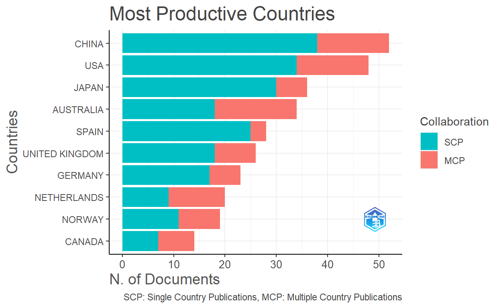
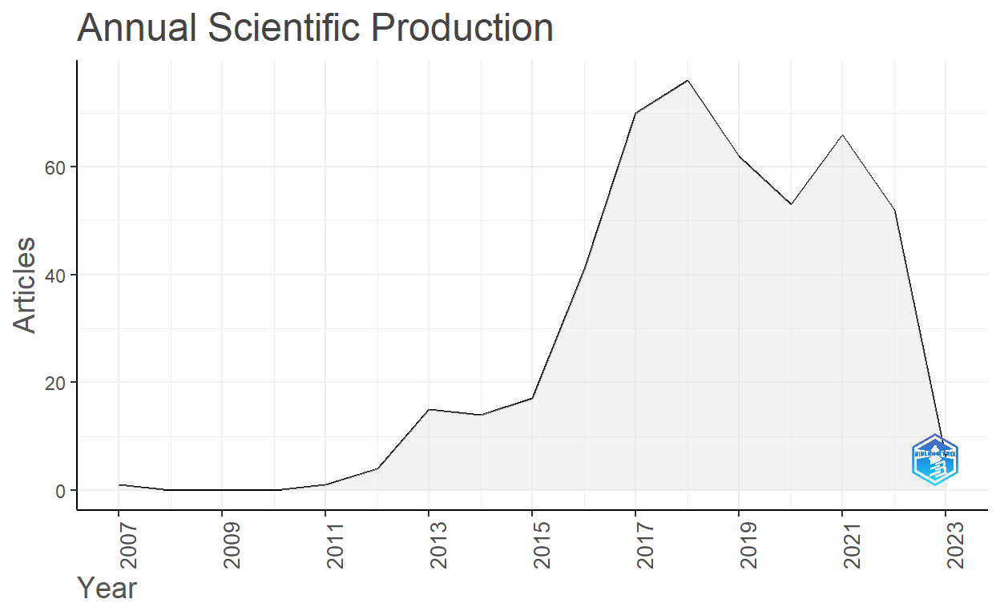
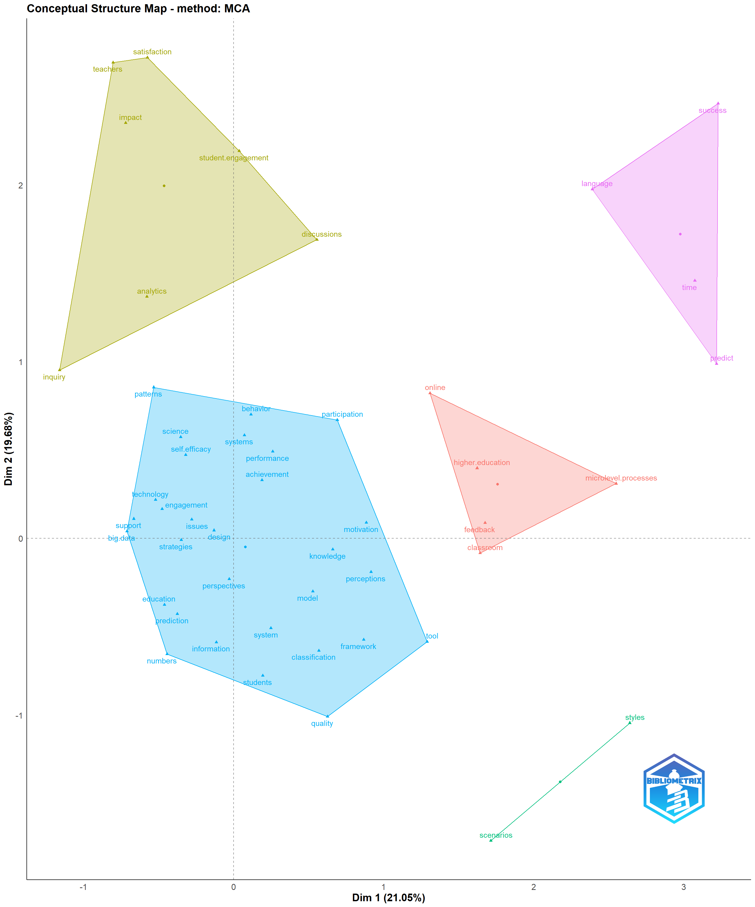
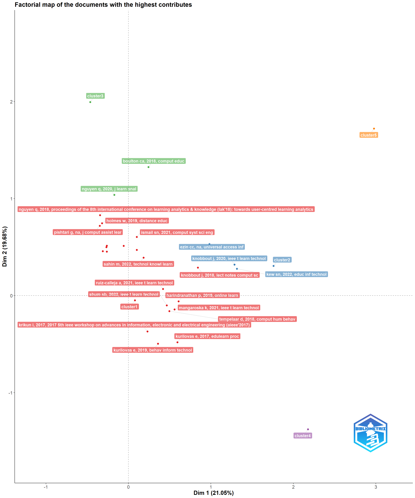
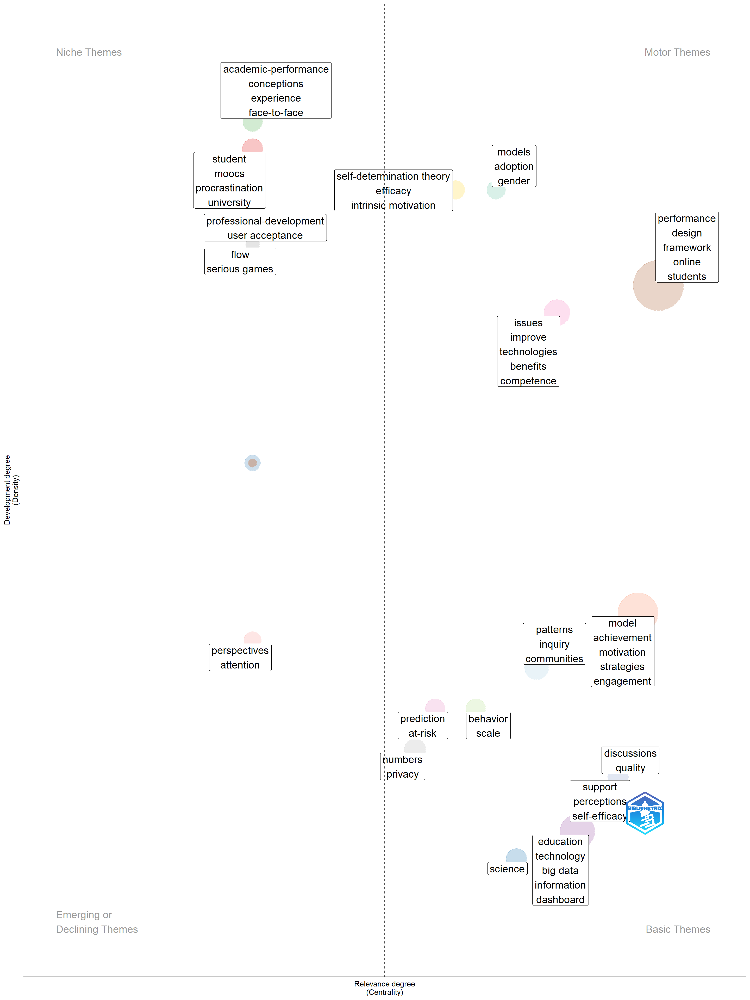
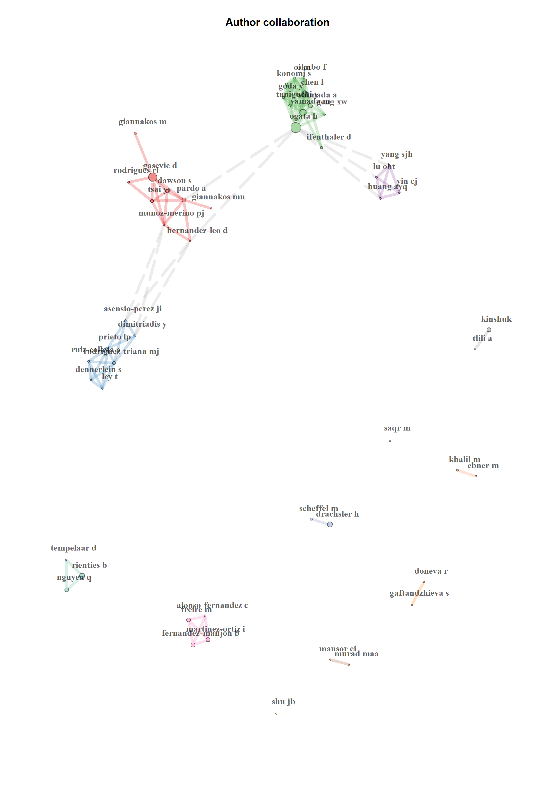

Introduction, import, and convert the data
Hi Everyone. Its been a busy semester for me. I taught a class (its over). I am interning at Alberta Education. I am also taking a doctoral-level coursework. I am also doing research regularly as always. But I am managing, I guess. I found an interesting analysis technique from one of my reading club that I think would be beneficial to you. Its called bibliometric analysis.
Some key reading that inspired me to try my hands on this techniques are Donthu et al.(2021), Moral-Muoz et al.(2020), and Sudakova et al.(2022). This post will revolve around the three papers I mentioned, as well as some online tutorial of the package. I will be performing a bibliometric analysis with bibliographic records of the learning analytics field in R. The package I will mainly use is the
bibliometrixpackage (Aria & Cuccurullo, 2017) to perform the analysis, with some additional helper packages such asggplot2.Bibliometric analysis is an exploratory method that analyzes large volumes of bibliometric records to examine trends of scientific publications, journal performance, collaboration pattern, and relationships between topics in the field (Donthu et al., 2021). Researchers can use this technique to gain a broad perspective of the field to identify a research gap that they can study, as well as determine its relative importance to other topics. Bibliometric records can be extracted from any scientific databases such as Web of science, SCOPUS, Digital science dimensions, and PubMed.
For the data set in this post, I extracted a set of bibliometric records from Web of Science because it provides more information on meta-data (e.g., keyword plus, cited references) and less missing data than Scopus. However, note that Scopus has more publication data for the arts and humanities field.
I used the search syntax of: Learning analytic* (All fields) AND Education* (All fields) NOT Medical (All fields), with filter for review article or proceeding Paper. Then, I extracted the first 500 entries from the database based on their relevance to the search term. Note that Web of Science only allows for the maximum of 500 entries to be exported if I requested for full bibliographic record. Here is the link to the search result.
First, we will set our working directory and load the packages as usual.
I exported the bibliographic file in as a plain text document. I will use the
convert2dffunction to import the data set into R environment. We have to specify source and format of data set for the package to correctly process the data
Show code
#using plain text file.
file <- c("la.txt")
M <- convert2df(file, dbsource = "wos", format = "plaintext")
Converting your wos collection into a bibliographic dataframe
Done!
Generating affiliation field tag AU_UN from C1: Done!- We can use the
biblioAnalysisfunction to perform descriptive analysis of the data set. We can check for information such as time span of the literature, number of journals, document types and so on. Some of the more interesting results are most relevant sources (i.e., journals or conferences), and top manuscripts per citation. We can identify popular topics and papers from these results.
Show code
#Summary
results <- biblioAnalysis(M, sep = ";")
S <- summary(object = results, k = 10, pause = FALSE)
MAIN INFORMATION ABOUT DATA
Timespan 2007 : 2023
Sources (Journals, Books, etc) 238
Documents 500
Annual Growth Rate % 11.85
Document Average Age 4.52
Average citations per doc 9.354
Average citations per year per doc 1.638
References 11674
DOCUMENT TYPES
article 162
article; book chapter 3
article; early access 19
article; proceedings paper 1
proceedings paper 300
review 11
review; book chapter 1
review; early access 3
DOCUMENT CONTENTS
Keywords Plus (ID) 321
Author's Keywords (DE) 1206
AUTHORS
Authors 1274
Author Appearances 1722
Authors of single-authored docs 47
AUTHORS COLLABORATION
Single-authored docs 49
Documents per Author 0.392
Co-Authors per Doc 3.44
International co-authorships % 29.8
Annual Scientific Production
Year Articles
2007 1
2011 1
2012 4
2013 15
2014 14
2015 17
2016 41
2017 70
2018 76
2019 62
2020 53
2021 66
2022 52
2023 6
Annual Percentage Growth Rate 11.85
Most Productive Authors
Authors Articles Authors Articles Fractionalized
1 OGATA H 19 OGATA H 5.33
2 GASEVIC D 16 GASEVIC D 3.87
3 RIENTIES B 12 RIENTIES B 3.68
4 YAMADA M 11 NGUYEN Q 2.98
5 NGUYEN Q 10 YAMADA M 2.85
6 DRACHSLER H 9 IFENTHALER D 2.57
7 KINSHUK 8 GIANNAKOS M 2.33
8 PARDO A 8 TEMPELAAR D 2.25
9 FERNANDEZ-MANJON B 7 KINSHUK 2.16
10 FREIRE M 7 DRACHSLER H 2.15
Top manuscripts per citations
Paper
1 GRELLER W, 2012, EDUC TECHNOL SOC
2 SHUM SB, 2012, EDUC TECHNOL SOC
3 LU OHT, 2018, EDUC TECHNOL SOC
4 JIVET I, 2018, PROCEEDINGS OF THE 8TH INTERNATIONAL CONFERENCE ON LEARNING ANALYTICS & KNOWLEDGE (LAK'18): TOWARDS USER-CENTRED LEARNING ANALYTICS
5 TABUENCA B, 2015, COMPUT EDUC
6 LEITNER P, 2017, STUD SYST DECIS CONT
7 WILLIAMS R, 2011, INT REV RES OPEN DIS
8 TSAI YS, 2017, SEVENTH INTERNATIONAL LEARNING ANALYTICS & KNOWLEDGE CONFERENCE (LAK'17)
9 JIVET I, 2017, LECT NOTES COMPUT SC
10 BODILY R, 2017, SEVENTH INTERNATIONAL LEARNING ANALYTICS & KNOWLEDGE CONFERENCE (LAK'17)
DOI TC TCperYear NTC
1 NA 374 31.17 2.29
2 NA 260 21.67 1.59
3 NA 120 20.00 10.39
4 10.1145/3170358.3170421 118 19.67 10.21
5 10.1016/j.compedu.2015.08.004 109 12.11 7.92
6 10.1007/978-3-319-52977-6_1 102 14.57 8.71
7 10.19173/irrodl.v12i3.883 83 6.38 1.00
8 10.1145/3027385.3027400 75 10.71 6.40
9 10.1007/978-3-319-66610-5_7 71 10.14 6.06
10 10.1145/3027385.3027403 71 10.14 6.06
Corresponding Author's Countries
Country Articles Freq SCP MCP MCP_Ratio
1 CHINA 52 0.1055 38 14 0.269
2 USA 48 0.0974 34 14 0.292
3 JAPAN 36 0.0730 30 6 0.167
4 AUSTRALIA 34 0.0690 18 16 0.471
5 SPAIN 28 0.0568 25 3 0.107
6 UNITED KINGDOM 26 0.0527 18 8 0.308
7 GERMANY 23 0.0467 17 6 0.261
8 NETHERLANDS 20 0.0406 9 11 0.550
9 NORWAY 19 0.0385 11 8 0.421
10 CANADA 14 0.0284 7 7 0.500
SCP: Single Country Publications
MCP: Multiple Country Publications
Total Citations per Country
Country Total Citations Average Article Citations
1 NETHERLANDS 853 42.650
2 UNITED KINGDOM 679 26.115
3 AUSTRALIA 516 15.176
4 CHINA 498 9.577
5 USA 319 6.646
6 JAPAN 243 6.750
7 SPAIN 207 7.393
8 NORWAY 174 9.158
9 AUSTRIA 147 18.375
10 GERMANY 109 4.739
Most Relevant Sources
Sources Articles
1 SEVENTH INTERNATIONAL LEARNING ANALYTICS & KNOWLEDGE CONFERENCE (LAK'17) 18
2 INTERACTIVE LEARNING ENVIRONMENTS 16
3 EDUCATIONAL TECHNOLOGY & SOCIETY 15
4 9TH INTERNATIONAL CONFERENCE ON EDUCATION AND NEW LEARNING TECHNOLOGIES (EDULEARN17) 12
5 JOURNAL OF LEARNING ANALYTICS 11
6 IEEE TRANSACTIONS ON LEARNING TECHNOLOGIES 9
7 EDULEARN18: 10TH INTERNATIONAL CONFERENCE ON EDUCATION AND NEW LEARNING TECHNOLOGIES 8
8 ETR&D-EDUCATIONAL TECHNOLOGY RESEARCH AND DEVELOPMENT 8
9 IEEE 21ST INTERNATIONAL CONFERENCE ON ADVANCED LEARNING TECHNOLOGIES (ICALT 2021) 8
10 JOURNAL OF COMPUTER ASSISTED LEARNING 8
Most Relevant Keywords
Author Keywords (DE) Articles Keywords-Plus (ID) Articles
1 LEARNING ANALYTICS 382 PERFORMANCE 41
2 HIGHER EDUCATION 52 MODEL 31
3 EDUCATIONAL DATA MINING 34 DESIGN 28
4 LEARNING DESIGN 33 FRAMEWORK 25
5 E-LEARNING 28 EDUCATION 24
6 SELF-REGULATED LEARNING 28 ONLINE 22
7 BLENDED LEARNING 25 STUDENTS 21
8 MACHINE LEARNING 24 ANALYTICS 17
9 ONLINE LEARNING 23 IMPACT 16
10 EDUCATION 17 ACHIEVEMENT 14- We can check for most cited references with the code below.
[,1]
LONG PHIL, 2011, EDUCAUSE REVIEW, V46, P31 58
GASEVIC D, 2015, TECHTRENDS, V59, P64, DOI 10.1007/S11528-014-0822-X 57
GRELLER W, 2012, EDUC TECHNOL SOC, V15, P42 56
FERGUSON R, 2012, INT J TECHNOL ENHANC, V4, P304, DOI 10.1504/IJTEL.2012.051816 54
SIEMENS G, 2013, AM BEHAV SCI, V57, P1380, DOI 10.1177/0002764213498851 42
ARNOLD K.E., 2012, P 2 INT C LEARN AN K, DOI DOI 10.1145/2330601.2330666, 10.1145/2330601.2330666 40
GASEVIC D, 2016, INTERNET HIGH EDUC, V28, P68, DOI 10.1016/J.IHEDUC.2015.10.002 40
CHATTI MA, 2012, INT J TECHNOL ENHANC, V4, P318, DOI 10.1504/IJTEL.2012.051815 39
LOCKYER L, 2013, AM BEHAV SCI, V57, P1439, DOI 10.1177/0002764213479367 39
TEMPELAAR DT, 2015, COMPUT HUM BEHAV, V47, P157, DOI 10.1016/J.CHB.2014.05.038 37
CLOW D., 2012, P 2 INT C LEARNING A, P134, DOI 10.1145/2330601.2330636, DOI 10.1145/2330601.2330636 31
SLADE S, 2013, AM BEHAV SCI, V57, P1510, DOI 10.1177/0002764213479366 29
PAPAMITSIOU Z, 2014, EDUC TECHNOL SOC, V17, P49 28
SCHWENDIMANN BA, 2017, IEEE T LEARN TECHNOL, V10, P30, DOI 10.1109/TLT.2016.2599522 27
SIEMENS G, 2012, P 2 INT C LEARNING A, DOI 10.1145/2330601.2330661, DOI 10.1145/2330601.2330661 27
VIBERG O, 2018, COMPUT HUM BEHAV, V89, P98, DOI 10.1016/J.CHB.2018.07.027 27
MACFADYEN LP, 2010, COMPUT EDUC, V54, P588, DOI 10.1016/J.COMPEDU.2009.09.008 26
AGUDO-PEREGRINA AF, 2014, COMPUT HUM BEHAV, V31, P542, DOI 10.1016/J.CHB.2013.05.031 24
SHUM SB, 2012, EDUC TECHNOL SOC, V15, P3 24
WISE A. F., 2014, P 4 INT C LEARNING A, P203 23- We can check for authors dominance ranking to see which author published the most, and the way that they work (single-authored, multi-authored).
Show code
#Authors Dominance ranking
DF <- dominance(results, k = 10)
DF Author Dominance Factor Tot Articles Single-Authored
1 KHALIL M 0.66666667 6 0
2 TSAI YS 0.57142857 7 0
3 IFENTHALER D 0.42857143 7 0
4 NGUYEN Q 0.30000000 10 0
5 RIENTIES B 0.16666667 12 0
6 DAWSON S 0.16666667 6 0
7 EBNER M 0.16666667 6 0
8 RODRIGUEZ-TRIANA MJ 0.16666667 6 0
9 YAMADA M 0.09090909 11 0
10 GASEVIC D 0.06250000 16 0
Multi-Authored First-Authored Rank by Articles Rank by DF
1 6 4 7 1
2 7 4 5 2
3 7 3 5 3
4 10 3 4 4
5 12 2 2 5
6 6 1 7 5
7 6 1 7 5
8 6 1 7 5
9 11 1 3 9
10 16 1 1 10- Finally, we can plot the output to make it understandable at a glance with the regular
plotfunction.
Show code
plot(x=results, k=10, pause=FALSE)
Examining relationships between authors with co-citation Analysis
- We can check how the papers in our data set cited each other with co-citation analysis. Results will be displayed as co-citation network below. We can see that there are two main clusters, indicating that papers within a cluster cited each other the most.
Show code
NetMatrix <- biblioNetwork(M, analysis = "co-citation", network = "references", sep = ";")
net=networkPlot(NetMatrix, weighted=NULL, n = 50,
Title = "Co-Citation Network", type = "fruchterman",
size=4, size.cex=TRUE, remove.multiple=FALSE, labelsize=1, label.n=10, label.cex=F, edgesize = 10)- We can also perform co-citation analysis at the source level (i.e., journals and conferences) to examine how sources in our data set cited each other.
Show code
Source=metaTagExtraction(M,"CR_SO",sep=";")
NetMatrix <- biblioNetwork(Source, analysis = "co-citation", network = "sources", sep = ";")
net=networkPlot(NetMatrix, n = 50, Title = "Co-Citation Network-Journal", type = "auto", size.cex=TRUE, size=3, remove.multiple=FALSE, labelsize=1,edgesize = 10, edges.min=5)
- We can also examine top 5 keywords used by publication authors in our data set with the code below. We can see popular topics based on keyword with this result.
Show code
LEARNING ANALYTICS HIGHER EDUCATION
382 52
EDUCATIONAL DATA MINING LEARNING DESIGN
33 33
E-LEARNING
28 - We can also examine author coupling cluster to see whose work is related to whose. Once we know the author, we can refer back to the list of our bibliographic records to examine their work.
Show code
res <- couplingMap(M, analysis = "authors", field = "CR", n = 250, impact.measure="local",
minfreq = 3, size = 0.5, repel = TRUE)
plot(res$map)- Finally, we can use a three fields plot to see the relationship between authors (AU), keywords that they used (DE), and journals/conferences that they submitted (SO).
Show code
threeFieldsPlot(M, fields = c("AU", "DE", "SO"), n = c(20, 20, 20))Examining conceptual structure with co-word analysis
- Co-word analysis is a useful tool to examine conceptual structure of the field. That is, we can see relationship between topics within the field of interest. The keyword co-occurrence network plot below shows the how frequent each keyword is presented in our bibliographic data from the size of its circle. The bigger they are, the more frequent they are used. Position of keywords on the plot also indicates which keywords are usually presented together.
Show code
#Co-occurrences network
# keywords
NetMatrix <- biblioNetwork(M, analysis = "co-occurrences", network = "keywords", sep = ";")
# Plot the network
net = networkPlot(NetMatrix, normalize="association", weighted=T, n = 30,
Title = "Keyword Co-occurrences", type = "fruchterman",
size=TRUE, edgesize = 5, labelsize=0.7, remove.multiple=FALSE, label.cex=TRUE)- We can also perform correspondence analysis to see relationship between topics with multiple correspondence analysis (MCA) or hierarchical cluster plot as well. The factorial maps also show papers with the highest contribution within the keyword clusters in the output.
Show code
# Conceptual Structure using keywords (method="MCA")
CS <- conceptualStructure(M, field="ID", method="MCA", minDegree=4, clust=5, stemming=FALSE, labelsize=15, documents=20)
Examining keyword usage across time with historiograph
- Most analyses we performed earlier did not use time point as a variable. We can plot a historiograph to see the evolution of keyword usage across time, as well as their relative popularity to each other. The plot below indicates that learning analytics is the post popular as it gained more interest since 2007 based on our data set.
Show code
library(reshape2)
library(ggplot2)
kword <- KeywordGrowth(M, Tag = "DE", sep = ";", top = 15, cdf = TRUE)
DF = melt(kword, id='Year')
# Timeline keywords ggplot
ggplot(DF,aes(x=Year,y=value, group=variable, shape=variable, colour=variable))+
geom_point()+geom_line()+
scale_shape_manual(values = 1:15)+
labs(color="Author Keywords")+
scale_x_continuous(breaks = seq(min(DF$Year), max(DF$Year), by = 5))+
scale_y_continuous(breaks = seq(0, max(DF$value), by=10))+
guides(color=guide_legend(title = "Author Keywords"), shape=FALSE)+
labs(y="Count", variable="Author Keywords", title = "Author's Keywords Usage Evolution Over Time")+
theme(text = element_text(size = 10))+
facet_grid(variable ~ .)Examining trends of the field with thematic map
Aside from examining frequency of keyword usage, we can use thematic map to examine trend of the topics within the field. The map below places topics within four panes (Cobo et al., 2018):
Upper right pane indicates motor theme that is important to the field as it is constantly used, hence the name motor;
Upper left pane indicates niche theme that is very specialized to certain groups of research;
Lower left pane indicates emerging/declining theme that is still weakly developed, meaning that it could still growing or starting to disappear;
Lower right pane indicates basic theme that is important to the field but not well developed as motor theme, meaning that topics in this pane are usually studied for general knowledge of the field.
Show code
Map=thematicMap(M, field = "ID", n = 250, minfreq = 4,
stemming = FALSE, size = 0.7, n.labels=5, repel = TRUE)
plot(Map$map)
Examining collaboration with social structure analysis
- We can examine collaboration pattern between authors from our data set with collaboration analysis. The author collaboration network below shows who collaborated with whom at the author level.
Show code
NetMatrix <- biblioNetwork(M, analysis = "collaboration", network = "authors", sep = ";")
net=networkPlot(NetMatrix, n = 50, Title = "Author collaboration",type = "auto", size=5,size.cex=T,edgesize = 5,labelsize=1, community.repulsion = 0.1)
- We can also plot an institution collaboration network to examine collaboration pattern between institutions as well.
Show code
NetMatrix <- biblioNetwork(M, analysis = "collaboration", network = "universities", sep = ";")
net=networkPlot(NetMatrix, n = 50, Title = "Institution collaboration",type = "auto", size=4,size.cex=F,edgesize = 3,labelsize=1, community.repulsion = 0.05)
- Lastly, we can examine collaboration pattern at international level with country collaboration network. This analysis shows countries that are productive within the field (indicated by size of the circle), as well as countries that they collaborate with as indicated by linkages in the plot.
Show code
country <- metaTagExtraction(M, Field = "AU_CO", sep = ";")
NetMatrix <- biblioNetwork(country, analysis = "collaboration", network = "countries", sep = ";")
net=networkPlot(NetMatrix, n = dim(NetMatrix)[1], Title = "Country collaboration",type = "circle", size=10,size.cex=T,edgesize = 1,labelsize=0.6, cluster="none")Concluding remarks
What I like about bibliometric analysis is that it examines the field at the meta level, meaning that it is a research that is built on other research. Without the work of other researchers out there, this analysis would be impossible.
This analysis method is a useful tool to gain a bird-eye view on state of the field that we are interested in. Results can be used inform early career researchers or students in their topic selection. Basically, it could be helpful for us to know which topic is popular (and therefore has a lot of papers we could read) or which topic is declining.
By identifying authors that publish a lot in the field, we can decide whether we want to follow their work to keep up with research trend, or deviate our work off their path so that we can study something new to the field. Anyway, thank you so much for reading this! I hope you like it :)